측량및지형공간정보산업기사 (2014-05-25 기출문제)
1과목: 응용측량
1. 정방형의 토지를 30m의 테이프로 측정 하였더니 가로 42m, 세로 32m를 얻었다. 이때 테이프의 오차가 30m에 대하여 (+)1.5cm로 발생하였다면 면적의 오차 는?
- 1.394m2
- 1.344m2
- 1.109m2
- 0.900m2
(정답률: 82%)

2. 동일 곡선반지름을 갖는 클로소이드 완화곡선에서 완화곡선의 매개변수(A)가 1.5배 증가하면 완화곡선의 길이는 몇 배가 되는가?
- 2.25
- 3.00
- 3.50
- 6.90
(정답률: 84%)
3. 완화곡선의 성질에 대한 설명으로 틀린 것은?
- 완화 곡선의 접선은 시점에서 직선에, 종점에서 원호에 접한다.
- 시점에서의 캔트는 원곡선의 캔트와 같다.
- 완화곡선에 있는 곡선반지름의 감소율은 캔트의 증가율과 같다.
- 곡선반지름은 완화곡선의 시점에서 무한대, 종점에서 원곡선 R로 된다.
(정답률: 65%)
4. 완화곡선의 캔트(cant)계산에서 동일한 조건에서 반지름만을 2배로 증가시키면 켄트는?
- 4배로 증가
- 2배로 증가
- 1/2로 감소
- 1/4로 감소
(정답률: 83%)
5. 유속 측정에 대한 설명으로 옳지 않은 것은?
- 1점법일 경우 수면으로부터 수심의 6/10인 곳의 유속을 측정하여 평균 유속으로 한다.
- 3점법일 경우 수면으로부터 수심의 2/10, 5/10, 8/10이 되는 곳의 유속을 측정하여 평균 유속을 구한다.
- 표면부자를 사용할 경우는 (0.8-0.9)×표면유속으로 평균유속을 구한다.
- 무풍일 경우 수면으로부터 수심의 2/10인 곳에서 최대 유속이 된다.
(정답률: 94%)
6. 직선 터널 양끝의 좌표가 A(120, 60), B(245, 75)이고 각가의 표고가 80m, 82m 일 때 이 터널의 경사거리는? (단, 좌표의 단위는 m 이다.)
- 115.12m
- 120.43m
- 125.91m
- 130.43m
(정답률: 73%)
7. 지하시설물 측량 방법 중 전자기파가 반사되는 성질을 이용하여 지중의 각종 현상을 밝히는 방법은?
- 전자유도 측량법
- 지중레이더 측량법
- 음파 측량법
- 자기관측법
(정답률: 82%)
8. 해상에 있는 수심측량선의 수평위치결정방법으로 가장 적합한 것은?
- 나침반에 의한 방법
- 평판측량에 의한 방법
- 음향측심기에 의한 방법
- 인공위성(GNSS) 측위에 의한 방법
(정답률: 82%)
9. 일반 철도의 노선측량에서 직선부와 곡선부 사이에 설치되는 완화 곡선(緩和曲線)에 적합한 곡선은?
- 3차 포물선
- 복심곡선
- 클로소이드(clothoid)곡선
- 렘니스케이트(Lemniscate)곡선
(정답률: 77%)
10. 디지털 구적기로 면적을 측정하였다. 측척 1 : 500 도면을 1 : 1000으로 잘못 세팅하여 측정하였더니 50m2 이었다면 올바른 면적은?
- 12.5m2
- 25.0m2
- 100.0m2
- 200.0m2
(정답률: 70%)
11. 단곡선 설치의 공식으로 틀린 것은? (단, R : 곡선반지름, ℐ : 현의 길이, I : 교각)
- 외할 E = R(sec(I/2)-1)
- 접선길이 T.L = R tan(I/2)
- 곡선길이 C.L (180°/π)RI°
- 편각 σ = l/2R(라디안)
(정답률: 64%)
12. 그림과 같은 지역을 점고법에 의해 구한 토량은?
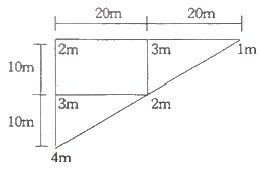
- 1000m3
- 1250m3
- 1500m3
- 2000m3
(정답률: 79%)
13. 달, 태양 등의 기조력과 기압, 바람 등에 의해서 일어나는 해수면의 주기적 승강 현상을 연속 관측하는 것은?
- 수온관측
- 해류관측
- 음속관측
- 조석관측
(정답률: 86%)
14. 도로의 기점으로 부터 1000.00m 지점에 교점(I.P)이 있고 원곡선의 반지름 R=100m, 교각 I=30˚ 20' 일때 시단현 lt와 종단현 le의 길이는?
- lt=7.11m, le=14.17m
- lt=7.11m, le=5.83m
- lt=12.89m, le=14.17m
- lt=12.89m, le=5.83m
(정답률: 70%)
15. 터널 중심선측량의 가장 중요한 목적은?
- 도벨의 정확한 위치 결정
- 터널 입구의 정확한 크기 설정
- 인조점의 올바른 매설
- 정확한 방향과 거리측정
(정답률: 86%)
16. 하천의 수위 중 평수위에 대한 설명으로 옳은 것은?
- 어느 기간 중 연 또는 월의 최저 수위의 평균값
- 어느 기간 중 평균 수위이하의 수위만을 평균한 수위
- 어느 기간 중 관측 수위의 합계를 그 관측횟수로 나눈 수위
- 어느 기간 내에서 관측 수위중 이것보다 높은 수위와 낮은 수위의 관측횟수가 같은 수위
(정답률: 69%)
17. 도로를 설계하기 위해 횡단면도를 작도하고 횡단면적을 구한 값이 표와 같다. 측점 No.1에서 No.2 까지의 성토량은?
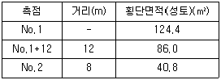
- 647.0m3
- 1262.4m3
- 1510.8m3
- 1769.6m3
(정답률: 49%)
18. 하천측량에서 평면측량의 범위에 대한 설명으로 틀린 것은?
- 유제부는 제외지만을 범위로 한다.
- 무제부는 홍수 영향구역보다 약간 넓게 한다.
- 홍수방제를 위한 하천공사에서는 하구에서부터 상류의 홍수피해가 미치는 지점까지로 한다.
- 사방공사의 경우에는 수원지까지 포함한다.
(정답률: 86%)
19. 그림과 같은 토지의 한 변 BC=52m 위의 점 D와 AC=46m 위의 점 E를 연결하여 ∆ABC의 면적을 이등분(m : n = 1 : 1) 하기 위한 AE의 길이는?
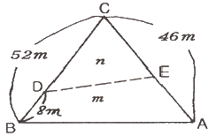
- 18. 8m
- 27. 2m
- 31. 5m
- 14. 5m
(정답률: 60%)
20. 그림과 같이 500㎜ 하수관 공사에서 A점의 관저 계획고가 50.15m이고 B점의 관저 계획고가 50.45m, 하수관의 경사가 1/400일 때 AB 간의 수평거리는?
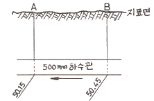
- 60m
- 75m
- 120m
- 150m
(정답률: 80%)
2과목: 사진측량 및 원격탐사
21. 항공삼각측량에서 해석 및 수치법에 의한 해석법이 아닌것은?
- 독립모델 조정법
- 광속 조정법
- 도해 사선법
- 다항식 조정법
(정답률: 78%)
22. 야간이나 구름이 많이 낀 기상조건에서 취득이 가장 용이한 영상은?
- 항공 영상
- 레이더 영상
- 다중파장 영상
- 고해상도 위성 영상
(정답률: 92%)
23. 공선조건식에 포함되는 변수가 아닌 것은?
- 지상점의 좌표
- 상호표정요소
- 내부표정요소
- 외부표정요소
(정답률: 44%)
24. 수치영상자료는 대개 8 비트로 표현된다. pixel값의 수치표현 범위로 옳은 것은?
- 0~63
- 1~64
- 0~255
- 1~256
(정답률: 89%)
25. 23㎝×23㎝의 사진을 이용하여 1 : 20000의 축척으로 촬영한 항공사진의 입체모형의 유효면적이 8. 46km2이다. 종중복도가 50%일 때 횡중복도는?
- 10%
- 20%
- 30%
- 40%
(정답률: 66%)
26. 다음 중 분광 해상도가 가장 높은 영상은?
- 적외선 영상(infrared image)
- 다중분광 영상(multi-spectral image)
- 초미세분광 영상(hyper-spectral image)
- 열적외선 영상(thermal infrared image)
(정답률: 70%)
27. 항공사진의 촬영에 대한 설명으로 옳지 않은 것은?
- 같은 사진기를 이용하여 촬영할 경우, 촬영고도와 촬영면적은 반비례한다.
- 같은 사진기를 이용하여 촬영할 경우, 촬영고도와 사진축척은 반비례한다.
- 같은 사진기를 이용하여 촬영한 경우, 촬영고도와 촬영되는 폭은 정비례한다.
- 같은 사진기를 이용하여 촬영할 겨우, 촬영고도를 2배로하면 사진매수는 1/4로 줄어든다.
(정답률: 51%)
28. 입체시에 대한 설명 중 옳지 않은 것은?
- 렌즈의 초점거리가 짧은 경우가 긴 경우보다 더 높게 보인다.
- 입체시 과정에서 본래의 고저가 반대가 되는 현상을 역입체시라 한다.
- 2매의 사진이 입체감을 나타내기 위해서는 사진 축척이 거의 같고 촬영한 사진기의 광축이 거의 동일 평면내에 있어야 한다.
- 여색입체사진이 오른쪽은 적색, 왼쪽은 청색으로 인쇄되었을 때 오른쪽은 적색, 왼쪽에 청색의 안경으로 보아야 바른 입체시가 된다.
(정답률: 76%)
29. 같은 고도에서 보통각 카메라 (초점거리 21㎝, 사진크기18㎝×18㎝, 피사각 60˚)로 찍은 사진과 광각 카메라 (초점거리 25㎝, 사진크기 23㎝×23㎝, 피사각 90°)로 찍은 사진의 포괄 면적 비는 약 얼마인가?
- 1 : 5
- 1 : 4
- 1 : 3
- 1 : 2
(정답률: 60%)
30. 축척 1 : 5000인 항공사진을 사진크기 23㎝×23㎝로 촬영하여 사진을 제작하였다. 촬영시의 종중복도가 60%라면 촬영 기선장은?
- 460m
- 870m
- 1⑤0m
- 1370m
(정답률: 82%)
31. 도화기 상에서 모텔의 Y방향 시차를 소거하는 작업은?
- 접합표정
- 절대표정
- 내부표정
- 상호표정
(정답률: 75%)
32. 종접합점(pass point)에 대한 설명으로 옳은 것은?
- 지상측량을 실시하여 좌표를 구한다.
- 블록을 형성하기 위한 점이다.
- 대공표지를 설치하여야 한다.
- 상호표정에 사용된다.
(정답률: 59%)
33. 3차원 좌표를 결정할 수 있는 방법이 아닌 것은?
- SAR interferometry
- LiDAR
- GPS
- Classification
(정답률: 80%)
34. 항공사진에 의한 지형도 제작의 주요과정이 옳게 나열된 것은?
- 기준점측량→세부도화→촬영
- 촬영→세부도화→기준점측량
- 세부도화→촬영→기준점측량
- 촬영→기준점측량→세부도화
(정답률: 91%)
35. 다음은 어느 지역의 영상과 동일한 지역의 지도이다. 이자료를 이용하여 “밭” 의 훈련지역(training field)을 선택한 결과로 적당한 것은?
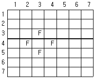
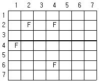
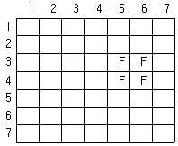
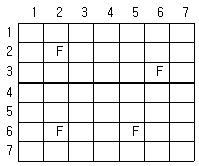
(정답률: 91%)
36. 촬영고도 4500m이고 초점 거리가 150㎜일 때 항공사진의 축척은?
- 1 : 20000
- 1 : 30000
- 1 : 40000
- 1:50000
(정답률: 89%)
37. 항공사진촬영을 통하여 얻어지는 사진의 투영 형태는?
- 중심투영
- 정사투영
- 경사투영
- 원통투영
(정답률: 50%)
38. 위성 영상의 처리단계는 전처리와 후처리로 분류된다. 다음 중 전처리에 해당되는 것은?
- 영상분류
- 기하보정
- 수치표고모델 생성
- 3차원시각화
(정답률: 79%)
39. 획득된 위성영상의 가로 × 세로의 픽셀(pixel) 개수가 3000×3000이고, 3밴드(Band)의 8bit 영상일 경우 수집된 위성영상의 파일 용량은?
- 약 2.57MB
- 약 25.7MB
- 약 257MB
- 약 2570MB
(정답률: 68%)
40. 기계좌표계로부터 사진좌표계로 변환하기 위해 필요한 좌표값은?
- 사진지표의 좌표값
- 공액점의 좌표값
- 지상 기준점의 좌표값
- 접합점의 좌표값
(정답률: 60%)
3과목: GIS 및 GPS
41. 체인-코드 방법으로 표현된 보기와 같은 그룹을 표시한 래스터데이터는? (단, 방향은 동 : 0, 서 : 2, 북 : 1, 남 : 3)
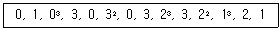
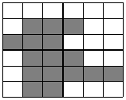
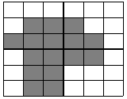
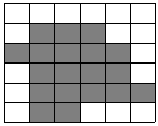
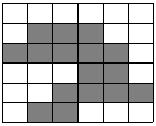
(정답률: 52%)
42. 3차원 (3D) GIS에 대한 설명으로 틀린 것은?
- 3차원 GIS는 3차원의 공간정보와 이를 이용한 공간분석 작업을 수행하는 기눙을 제공한다.
- 3차원 데이터는 지상 표면 (surface)과 지형·지물 (feature)모델로 구분돌 수 있다.
- 3차원적인 데이터 표헌과 분석 작업은 현실 세계에 대한 이해를 증진 시킨다.
- 차원 GIS는 평면공간(X, Y)에 대한 시간의 변화로 표현 되는 공간정보를 의미한다.
(정답률: 74%)
43. GNSS (Global Navigation Satellite System)위성과 관련이 없는 것은?
- GALILEO.
- GPS
- GLONASS
- GMS
(정답률: 87%)
44. GPS에 대한 설명으로 틀린 것은?
- GPS는 군사적인 목적으로 미 국방성에 의하여 개발되었다.
- GPS는 Bessel 타원체를 사용한다.
- GPS로부터 계산되는 높이는 타원체고이다.
- GPS는 연속적인 시간체계인 GPS시 (GPS time)를 사용한다.
(정답률: 82%)
45. 지리정보시스템 (GIS)의 데이터 처리를 위한 데이터베이스 관리시스템 (DBMS)에 대한 설명으로 틀린 것은?
- 복잡한 조건 검색 기능이 불필요 하다.
- 자료의 중볷없이 표준화된 형태로 저장되어 있어야 한다.
- 데이터베이스의 내용을 표시할 수 있어야 한다.
- 데이터 보호를 위한 안전관리가 되어 있어야 한다.
(정답률: 76%)
46. 위상정보에 관한 설명으로 틀린 것은?
- 공간 객체간의 형태 (shape) 에 관한 정보만을 제공하므로 제반 분석을 매우 빠르게 한다.
- 공간상에 존재하는 공간객체의 길이, 면적 등의 계산이 가능하게 한다.
- 공간상에 존재하는 객체의 형태 (shape), 계급성, 연결성에 관한 정보를 제공한다.
- 다양한 공간분석을 가능하게 한다.
(정답률: 70%)
47. 수치지도 제작을 위한 TM 투영법을 투영성질 및 투영면의 형태메 따라 분류하면 어느것에 해단되는가?
- 등각 횡원통도법
- 등적 횡원통도법
- 등각 원추도법
- 등적 원추도법
(정답률: 74%)
48. 다음 중 서로 다른 종류의 공간자료처리시스템 사이에서 교환포맷으로 사용하기 적당한 것은?
- BMW
- JPG
- PNG
- GeoTiff
(정답률: 83%)
49. 공간데이터의 각종 정보설명을 문서화 한 것으로 공간데이터 자체의 특성과 정보를 유지 관리하고 이를 사용자가 쉽게 접근할 수 있도록 도와주는 자료는?
- 메타데이터
- 원지데이터
- 측량데이터
- 벡터데이터
(정답률: 89%)
50. P-code를 암호화한 것을 무엇이라 하는가?
- Y-code
- W-code
- Z-count
- Antispoofing
(정답률: 74%)
51. MMS (Mobile Mapping System)에서 GPS의 신호가 빌딩이나 수목에 단절되는 경우 d를 보완해주며 짧은 시간 내에 모호정수의 결정을 쉽게 해주는 장치는?
- NAV
- CNS
- ATM
- INS
(정답률: 74%)
52. TIN에 대한 설명으로 옳지 않은 것은?
- 적은 자료로서 복잡한 지형을 효율적으로 나타낼 수 있다.
- 3점으로 연결된 불규칙 삼각형으로 구성된 삼각망이다.
- TIN모형을 이용하여 경사의 크기 (gradient)나 경사의 방향 (aspect)을 계산할 수 있다.
- 격자구조로서 연결성이나 위상정보가 존재하지 않는다.
(정답률: 89%)
53. GIS 자료구조에 대한 다음 설명 중 옳지 않은 것은?
- 벡터 구조에서는 각 객체의 위치가 공간좌표체계에 의해 표시된다.
- 벡터 구조는 래스터 구조보다 객체의 형상이 현실에 가깝게 표현된다.
- 래스터 구조에서 수치값은 해당 위치의 객체의 형태나 관련 정보를 표현한다.
- 래스터 구조에서는 객체의 공간좌표에 다핸 정보가 존재하지 않는다.
(정답률: 69%)
54. 지리정보체계 소프트웨어의 일반적인 주요 기능으로 보기 어려운 것은?
- 벡터형 공간자료와 래스터형 공간자료의 통합기능
- 사진, 동영상, 음성 등 멀티미디어 자료의 편집 기능
- 공간자료와 속성자료를 이용한 모델링 기능
- DBMS와 연계한 공간자료 및 속성정보의 관리 기능
(정답률: 75%)
55. 지리정보시스템 (GIS)의 자료 저장 형식 중 벡터 (Vector)방식에 대한 설명으로 옳지 않은 것은?
- 자료구조가 단순하다.
- 위상구조에 적합하다.
- 중첩연산을 간단하게 구현할수 있다.
- 영상처리에 효율적이다.
(정답률: 17%)
56. GIS 표준과 관련된 국제기구는?
- Open Geospatial Consortium
- Open Sourve Consortium
- Open Sene Graph
- Open GIS Library
(정답률: 78%)
57. 지리정보시스템의 자료입력과정에서 종이 지도를 래스터형태의 데이터로 입력할 수 있는 장비는?
- 스캐너
- 키보드
- 마우스
- 디지타이저
(정답률: 82%)
58. 지리정보시스템 (GIS)에서 래스터 데이터를 이용한 공간분석 기능 수행 중 A와 B를 이용하여 수행한 결과C를 만족시키기 위한 질의 조건으로 옳은 것은?
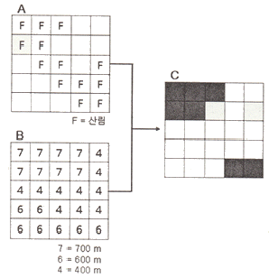
- (A=산림) AND (B ＜ 500m)
- (A=산림) AND NOT (B ＜ 500m)
- (A=산림) OR (B ＜ 500m)
- (A=산림) XOR (B ＜ 500m)
(정답률: 72%)
59. 축척 1:5000 수치지도를 만든후, 데이터의 정확도 검증의 위해 10개의 지점에 대해 수치지도 상에서 측정한 좌표와 현장에서 검증한 좌표 간에 아래와 같은 오차가 발행함을 알았다, 위치정확도의 계산으로 옳은 것은?
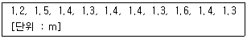
- RMSE = 1.22m
- RMSE = 1.32
- RMSE = 1.46
- RMSE = 1.56m
(정답률: 55%)
60. 네트워크 RTK 위치결정 방식으로 현재 국토지리정보원에서 운영 중인 시스템 중 하나인 것은?
- TEC (Total Electron Content)
- DGPS (Differential GPS)
- VRS (Virtual Reference Station)
- PPP (Precis Point Positioning)
(정답률: 82%)
4과목: 측량학
61. 기포 한 눈금의 길이가 2mm, 감도가 20“ 일 때 곡률반지름은?
- 20.63m
- 23.26m
- 32.12m
- 38.42m
(정답률: 64%)
62. A, B점간의 고저차를 구하기 위해 그림과 같이 (1), (2), (3)노선을 직접 수준측량을 실시 하여 표와같은 결과를 얻었다면 최확값은?
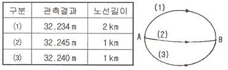
- 32.256m
- 32.246m
- 32.241m
- 32.250m
(정답률: 79%)
63. 측량에 있어서 부정오차가 일어날 가능성의 확률적 분포특성에 대하나 설명으로 틀린 것은?
- 큰 오차가 생길 확률은 작은 오차가 생길 확률보다 매우 작다.
- 같은 크기의 양 (+) 오차의 음 (-) 오차가 생길 확률은 같다
- 매우 큰 오차는 거의 생기지 않는다.
- 오차의 발생확률은 최소제곱법에 따른다.
(정답률: 66%)
64. 지구표면에서 반지름 55km까지를 평면으로 간주한다면 거리의 허용정밀도는? (단, 지구 반지름은 6370km 이다.)
- 약 1/40000
- 약 1/50000
- 약 1/60000
- 약 1/70000
(정답률: 72%)
65. 축척 1 : 10000의 지형도에 등고선을 기입할 때, 계곡선의 간격은?
- 10m
- 25m
- 50m
- 100m
(정답률: 66%)
66. A, B, C, D 세 그룹이 기선측량을 한 결과 다음과 같다면 최확값은?(오류 신고가 접수된 문제입니다. 반드시 정답과 해설을 확인하시기 바랍니다.)
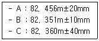
- 82. 347m
- 82. 350m
- 82. 353m
- 82. 356m
(정답률: 34%)
67. 50m의 줄자로 거리를 측정할 때 ±3mm의 부정오차가 생긴다면 이줄자로 150m를 관측할 때 생겨는 부정오차는?
- ±3.7mm
- ±4.2mm
- ±4.7mm
- ±5.2mm
(정답률: 66%)
68. 전자기파 거리측정기에 대한 설명 중 옳지 않은 것은?
- 전자기파거리측량기는 광파, 전파를 일정파장의 주파수로 변조하여 변조파의 왕복 위상변화를 관측하여여 거리를 구한다
- 광파거리측량기는 가시광선 또는 적외선과 같은 비가시광선을 주로 사용하며, 중 · 단거리의 관측에 많이 사용된다.
- 전파거리측량기는 마이크로파의 파장대를 주로 사용하며 수십 km 등 장거리의 관측에 사용된다.
- 광파거리측량기는 안개, 비 등과 같은 기상조건의 영향을 받지 않으며 주국과 종국에서 서로 무선 통화가 불가능 하다.
(정답률: 89%)
69. 다각측량의 특징으로 옳지 않은 것은?
- 거리와 각을 관측하여 계산에 의해 모든 정의 위치를 결정한다
- 좁은 지역이나 시가지 또는 산림 지역처럼 주변의 시통이 잘 안 되는 경우에 유용하다.
- 삼각점이 멀리 배치되어 있어 좁은 지역의 세부측량에 기준이 되는 점을 추가 설치할 경우 적합하다.
- 삼각착량 보다 높은 정확도를 요하는 골조측량에 이용 한다.
(정답률: 66%)
70. 표준자와 비교하였더니 30m 에 대하여 6cm가 늘어난 줄자로 삼각형의 지역을 측정하여 삼사법으로 면적을 측정하였더니 950m2 였다. 이지역의 정확한 면적은?
- 1007.5m2
- 953.8m2
- 933.1m2
- 896.9m2
(정답률: 71%)
71. 지형표시방법 중 점고법에 대한 설명으로 옳은 것은?
- 지표면상 임의 점의 표고를 숫자에 의하여 나타내는 방법
- 지형을 색으로 구분하고 체색하여 높이의 변화를 나타내는 방법
- 태양광선이 서북쪽에서 경사45˚ 의 각도로 비친다고 가정하고 채색으로 표시하는 방법
- 단선상의 선으로 지표의 기복을 나타내는 방법
(정답률: 72%)
72. 강을 사이에 두고 교호수준측량을 실시하였다. A점과 B점에 표척을 세우고 A점에서5m 거리에 레벨을 세워 표척 A와 B를 읽으니 1.5m와 1.9m 이었고, B점에서 5m거리에 레벨을 옮겨 A와 B의 고저차는?(오류 신고가 접수된 문제입니다. 반드시 정답과 해설을 확인하시기 바랍니다.)
- 0.1m
- -0.2m
- -0.3m
- 0.6m
(정답률: 49%)
73. 방위각과 방위의 관계를 잘못 설명한 것은?
- 0˚ ＜ 방위각 ＜ 90˚ = N 방위각 E
- 90˚ ＜ 방위각 ＜ 180˚ = S (180˚ - 방위각) E
- 180˚ ＜ 방위각 ＜ 270˚ = S (180˚ - 방위각) W
- 270˚ ＜ 방위각 ＜ 360˚ = N (360˚ - 방위각 ) w
(정답률: 78%)
74. 삼각망의 종류에서 정확도가 높은 순서로 나열한 것은?
- 사변형망 ＞유심다각망 ＞단열삼각망
- 사변형망 ＞단열삼각망 ＞유심다각망
- 유심다각망 ＞사변형망 ＞단열삼각망
- 유심다각망 ＞단열삼각망 ＞사변형망
(정답률: 71%)
75. 지형도의 축척별 주곡선 간격으로 옳지 않은 것은? (단, 축척 – 등고선 간격)
- 1 : 50000 – 20m
- 1 : 25000 – 10m
- 1 : 10000 – 5m
- 1 : 5000 – 2.5m
(정답률: 76%)
76. 측량 · 수로조사 및 지적에 관한 법률에 의한 용어의 정의로 옳지 않은 것은?
- 일반측량이란 기본측량, 공공측량, 지적측량 및 수로측량을 말한다.
- 지적측량이란 토지를 지적공부에 등록하거나 지적공부에 등록된 경계점을 지사에 복원하기 위하여 필지의 경계 또는 좌표와 면적을 정하는 측량을 말한다.
- 수로측량이란 해양의 수심 · 지주자기 · 중력 · 지형 · 지질의 측량과 해안선 및 이에 딸린 토지의 측량을 말한다.
- 기본측량이란 모든 측량의 기초가 되는 공간정보를 제고 하기 위하여 국토교통부장관이 실시하는 측량을 말한다.
(정답률: 86%)
77. 측량업의 종류에 해당되지 않는 것은?
- 지적측량업
- 지하시설물측량업
- 연안조사측량업
- 특수측량업
(정답률: 63%)
78. 국토교통부장관이 일반측량을 한 자에게 성과 및 측량기록을 제풀하게 하는 경우가 아닌 것은?
- 측량의 중복배제
- 측량의 정확도 확보
- 측량 수행자의 적격성 판다
- 측량에 관한 자료의 수집 및 분석
(정답률: 78%)
79. 다음 중 일반 측량을 실시 할 때 기초로 할 수 없는 것은?
- 기본측량성과
- 일반측량성과
- 공공측량성과
- 공공측량기록
(정답률: 75%)
80. 2년 이하의 징역 또는 2천만원 이하의 벌금에 해당되지 않는 사항은?
- 측량기준점표지를 이전 또는 파손한 자
- 성능검사를 부정하게 한 성능검사대행자
- 법을 위반하여 측량성과를 국외로 반출한 자
- 측량성과 또는 측량기복을 무단으로 복제한 자
(정답률: 58%)
하지만 이 문제에서는 면적의 오차를 구하는 것이므로, 실제 면적에서 측정한 면적을 뺀 값을 구하면 된다.
실제 면적 - 측정한 면적 = 1344.225m² - (42m × 32m) = 1344.225m² - 1344m² = 0.225m²
따라서 면적의 오차는 0.225m²이다.
정답은 "1.344m²"이 아니라 "0.225m²"이다. 주어진 보기에서는 단위를 제대로 표기하지 않았기 때문에 혼란이 생긴 것이다.